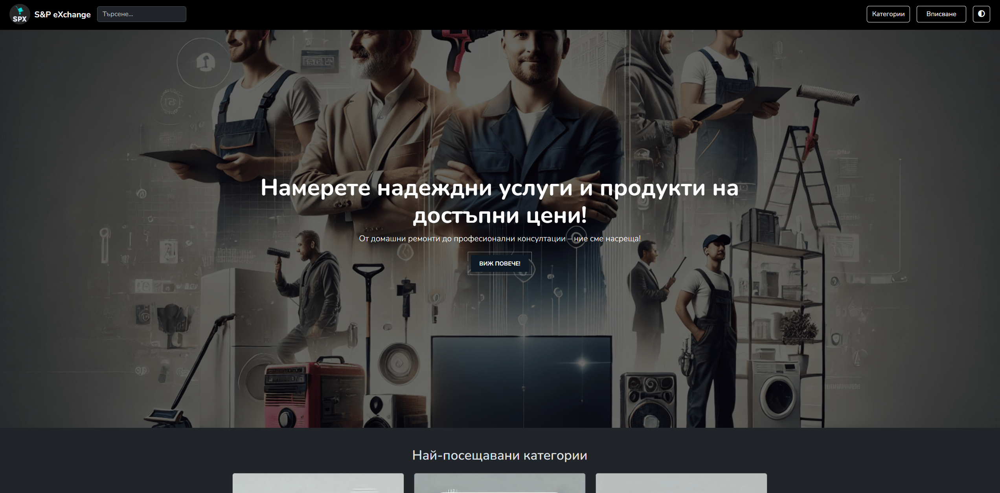
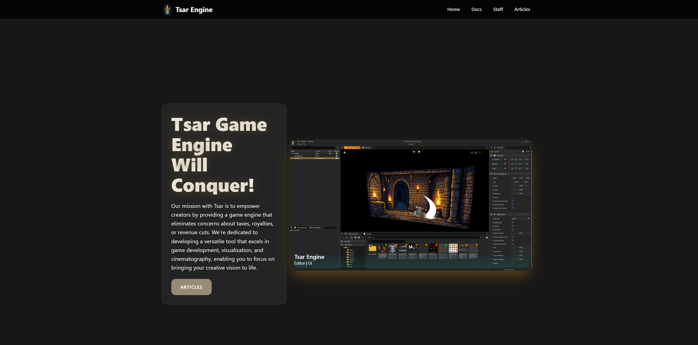
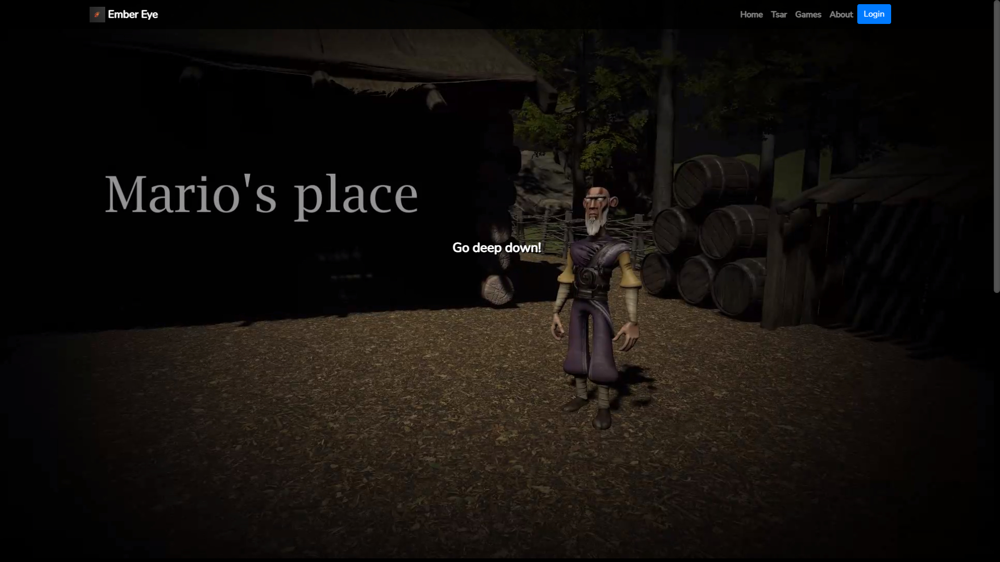
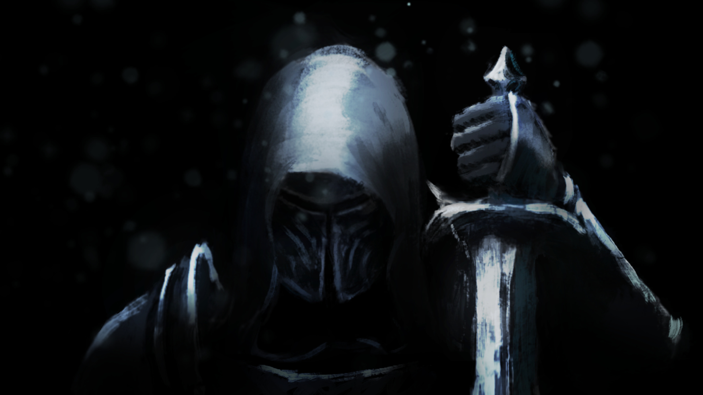
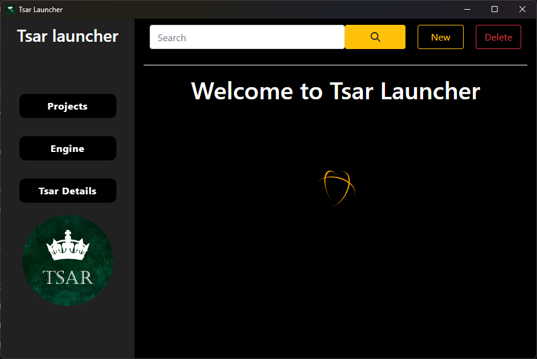
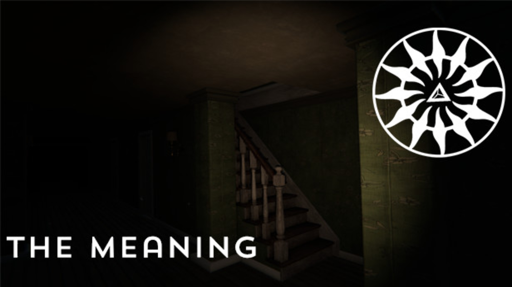
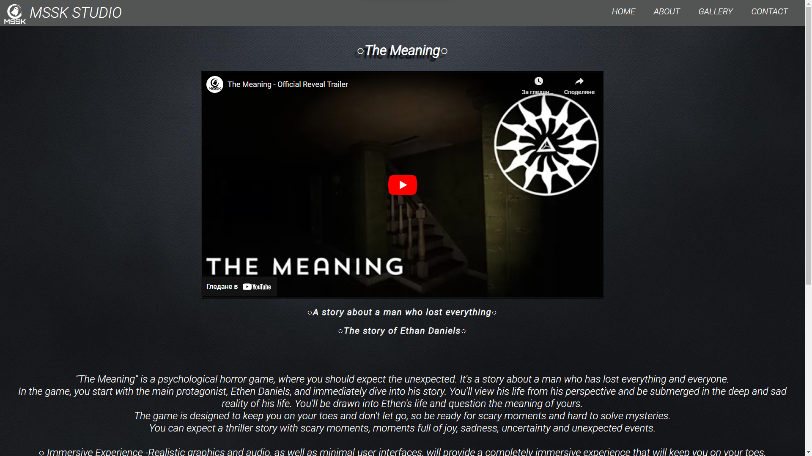

Full Stack Web Developer • Desktop Applications Developer
Hello, my name is Serkan, and I am currently working at the University of Ruse. I have been passionately involved in full-stack web development since high school, cultivating a robust understanding of data structures, algorithms and databases.
Throughout my journey, I have successfully developed multiple websites and web applications, leveraging technologies such as ASP.NET, JavaScript, NodeJS and Electron to create sophisticated user experiences. Additionally, I have contributed my skills and creativity to the design and development of two games, showcasing my versatility and commitment to innovation in technology.






